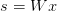
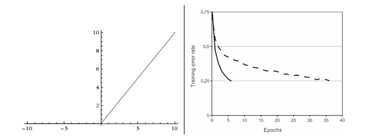

内容列表：
- 不用大脑做类比的快速简介
- 单个神经元建模
- 生物动机和连接
- 作为线性分类器的单个神经元
- 常用的激活函数 译者注：上篇翻译截止处
- 神经网络结构
- 层组织
- 前向传播计算例子
- 表达能力
- 设置层的数量和尺寸
- 小节
- 参考文献
快速简介
在不诉诸大脑的类比的情况下，依然是可以对神经网络算法进行介绍的。在线性分类一节中，在给出图像的情况下，是使用来计算不同视觉类别的评分，其中 是一个矩阵，
是一个矩阵， 是一个输入列向量，它包含了图像的全部像素数据。在使用数据库CIFAR-10的案例中，
是一个输入列向量，它包含了图像的全部像素数据。在使用数据库CIFAR-10的案例中， 是一个[3072x1]的列向量，
是一个[3072x1]的列向量， 是一个[10x3072]的矩阵，所以输出的评分是一个包含10个分类评分的向量。
是一个[10x3072]的矩阵，所以输出的评分是一个包含10个分类评分的向量。
神经网络算法则不同，它的计算公式是 。其中
。其中 的含义是这样的：举个例子来说，它可以是一个[100x3072]的矩阵，其作用是将图像转化为一个100维的过渡向量。函数
的含义是这样的：举个例子来说，它可以是一个[100x3072]的矩阵，其作用是将图像转化为一个100维的过渡向量。函数 是非线性的，它会作用到每个元素。这个非线性函数有多种选择，后续将会学到。但这个形式是一个最常用的选择，它就是简单地设置阈值，将所有小于0的值变成0。最终，矩阵
是非线性的，它会作用到每个元素。这个非线性函数有多种选择，后续将会学到。但这个形式是一个最常用的选择，它就是简单地设置阈值，将所有小于0的值变成0。最终，矩阵 的尺寸是[10x100]，因此将得到10个数字，这10个数字可以解释为是分类的评分。注意非线性函数在计算上是至关重要的，如果略去这一步，那么两个矩阵将会合二为一，对于分类的评分计算将重新变成关于输入的线性函数。这个非线性函数就是改变的关键点。参数
的尺寸是[10x100]，因此将得到10个数字，这10个数字可以解释为是分类的评分。注意非线性函数在计算上是至关重要的，如果略去这一步，那么两个矩阵将会合二为一，对于分类的评分计算将重新变成关于输入的线性函数。这个非线性函数就是改变的关键点。参数 将通过随机梯度下降来学习到，他们的梯度在反向传播过程中，通过链式法则来求导计算得出。
将通过随机梯度下降来学习到，他们的梯度在反向传播过程中，通过链式法则来求导计算得出。
一个三层的神经网络可以类比地看做 ，其中
，其中 是需要进行学习的参数。中间隐层的尺寸是网络的超参数，后续将学习如何设置它们。现在让我们先从神经元或者网络的角度理解上述计算。
是需要进行学习的参数。中间隐层的尺寸是网络的超参数，后续将学习如何设置它们。现在让我们先从神经元或者网络的角度理解上述计算。
单个神经元建模
生物动机与连接
大脑的基本计算单位是神经元（neuron）。人类的神经系统中大约有860亿个神经元，它们被大约10^14-10^15个突触（synapses）连接起来。下面图表的左边展示了一个生物学的神经元，右边展示了一个常用的数学模型。每个神经元都从它的树突获得输入信号，然后沿着它唯一的轴突（axon）产生输出信号。轴突在末端会逐渐分枝，通过突触和其他神经元的树突相连。
在神经元的计算模型中，沿着轴突传播的信号（比如 ）将基于突触的突触强度（比如
）将基于突触的突触强度（比如 ），与其他神经元的树突进行乘法交互（比如
），与其他神经元的树突进行乘法交互（比如 ）。其观点是，突触的强度（也就是权重
）。其观点是，突触的强度（也就是权重 ），是可学习的且可以控制一个神经元对于另一个神经元的影响强度（还可以控制影响方向：使其兴奋（正权重）或使其抑制（负权重））。在基本模型中，树突将信号传递到细胞体，信号在细胞体中相加。如果最终之和高于某个阈值，那么神经元将会激活，向其轴突输出一个峰值信号。在计算模型中，我们假设峰值信号的准确时间点不重要，是激活信号的频率在交流信息。基于这个速率编码的观点，将神经元的激活率建模为激活函数（activation function）
），是可学习的且可以控制一个神经元对于另一个神经元的影响强度（还可以控制影响方向：使其兴奋（正权重）或使其抑制（负权重））。在基本模型中，树突将信号传递到细胞体，信号在细胞体中相加。如果最终之和高于某个阈值，那么神经元将会激活，向其轴突输出一个峰值信号。在计算模型中，我们假设峰值信号的准确时间点不重要，是激活信号的频率在交流信息。基于这个速率编码的观点，将神经元的激活率建模为激活函数（activation function） ，它表达了轴突上激活信号的频率。由于历史原因，激活函数常常选择使用sigmoid函数
，它表达了轴突上激活信号的频率。由于历史原因，激活函数常常选择使用sigmoid函数 ，该函数输入实数值（求和后的信号强度），然后将输入值压缩到0-1之间。在本节后面部分会看到这些激活函数的各种细节。
，该函数输入实数值（求和后的信号强度），然后将输入值压缩到0-1之间。在本节后面部分会看到这些激活函数的各种细节。
————————————————————————————————————————
————————————————————————————————————————
class Neuron(object):# ...def forward(inputs):""" 假设输入和权重是1-D的numpy数组，偏差是一个数字 """cell_body_sum = np.sum(inputs * self.weights) + self.biasfiring_rate = 1.0 / (1.0 + math.exp(-cell_body_sum)) # sigmoid激活函数return firing_rate换句话说，每个神经元都对它的输入和权重进行点积，然后加上偏差，最后使用非线性函数（或称为激活函数）。本例中使用的是sigmoid函数 。在本节的末尾部分将介绍不同激活函数的细节。
。在本节的末尾部分将介绍不同激活函数的细节。
粗糙模型：要注意这个对于生物神经元的建模是非常粗糙的：在实际中，有很多不同类型的神经元，每种都有不同的属性。生物神经元的树突可以进行复杂的非线性计算。突触并不就是一个简单的权重，它们是复杂的非线性动态系统。很多系统中，输出的峰值信号的精确时间点非常重要，说明速率编码的近似是不够全面的。鉴于所有这些已经介绍和更多未介绍的简化，如果你画出人类大脑和神经网络之间的类比，有神经科学背景的人对你的板书起哄也是非常自然的。如果你对此感兴趣，可以看看这份评论或者最新的另一份。
作为线性分类器的单个神经元
神经元模型的前向计算数学公式看起来可能比较眼熟。就像在线性分类器中看到的那样，神经元有能力“喜欢”（激活函数值接近1），或者不喜欢（激活函数值接近0）输入空间中的某些线性区域。因此，只要在神经元的输出端有一个合适的损失函数，就能让单个神经元变成一个线性分类器。
一个单独的神经元可以用来实现一个二分类分类器，比如二分类的Softmax或者SVM分类器。
常用激活函数
————————————————————————————————————————
————————————————————————————————————————
Sigmoid。sigmoid非线性函数的数学公式是 ，函数图像如上图的左边所示。在前一节中已经提到过，它输入实数值并将其“挤压”到0到1范围内。更具体地说，很大的负数变成0，很大的正数变成1。在历史上，sigmoid函数非常常用，这是因为它对于神经元的激活频率有良好的解释：从完全不激活（0）到在求和后的最大频率处的完全饱和（saturated）的激活（1）。然而现在sigmoid函数已经不太受欢迎，实际很少使用了，这是因为它有两个主要缺点：
，函数图像如上图的左边所示。在前一节中已经提到过，它输入实数值并将其“挤压”到0到1范围内。更具体地说，很大的负数变成0，很大的正数变成1。在历史上，sigmoid函数非常常用，这是因为它对于神经元的激活频率有良好的解释：从完全不激活（0）到在求和后的最大频率处的完全饱和（saturated）的激活（1）。然而现在sigmoid函数已经不太受欢迎，实际很少使用了，这是因为它有两个主要缺点：
- Sigmoid函数饱和使梯度消失。sigmoid神经元有一个不好的特性，就是当神经元的激活在接近0或1处时会饱和：在这些区域，梯度几乎为0。回忆一下，在反向传播的时候，这个（局部）梯度将会与整个损失函数关于该门单元输出的梯度相乘。因此，如果局部梯度非常小，那么相乘的结果也会接近零，这会有效地“杀死”梯度，几乎就有没有信号通过神经元传到权重再到数据了。还有，为了防止饱和，必须对于权重矩阵初始化特别留意。比如，如果初始化权重过大，那么大多数神经元将会饱和，导致网络就几乎不学习了。
- Sigmoid函数的输出不是零中心的。这个性质并不是我们想要的，因为在神经网络后面层中的神经元得到的数据将不是零中心的。这一情况将影响梯度下降的运作，因为如果输入神经元的数据总是正数（比如在
 中每个元素都
中每个元素都 ），那么关于
），那么关于 的梯度在反向传播的过程中，将会要么全部是正数，要么全部是负数（具体依整个表达式
的梯度在反向传播的过程中，将会要么全部是正数，要么全部是负数（具体依整个表达式 而定）。这将会导致梯度下降权重更新时出现z字型的下降。然而，可以看到整个批量的数据的梯度被加起来后，对于权重的最终更新将会有不同的正负，这样就从一定程度上减轻了这个问题。因此，该问题相对于上面的神经元饱和问题来说只是个小麻烦，没有那么严重。
而定）。这将会导致梯度下降权重更新时出现z字型的下降。然而，可以看到整个批量的数据的梯度被加起来后，对于权重的最终更新将会有不同的正负，这样就从一定程度上减轻了这个问题。因此，该问题相对于上面的神经元饱和问题来说只是个小麻烦，没有那么严重。
————————————————————————————————————————
左边是ReLU（校正线性单元：Rectified Linear Unit）激活函数，当 时函数值为0。当
时函数值为0。当 函数的斜率为1。右边是从 Krizhevsky等的论文中截取的图表，指明使用ReLU比使用tanh的收敛快6倍。
函数的斜率为1。右边是从 Krizhevsky等的论文中截取的图表，指明使用ReLU比使用tanh的收敛快6倍。
————————————————————————————————————————
ReLU。在近些年ReLU变得非常流行。它的函数公式是 。换句话说，这个激活函数就是一个关于0的阈值（如上图左侧）。使用ReLU有以下一些优缺点：
。换句话说，这个激活函数就是一个关于0的阈值（如上图左侧）。使用ReLU有以下一些优缺点：
- 优点：相较于sigmoid和tanh函数，ReLU对于随机梯度下降的收敛有巨大的加速作用（ Krizhevsky等的论文指出有6倍之多）。据称这是由它的线性，非饱和的公式导致的。
- 优点：sigmoid和tanh神经元含有指数运算等耗费计算资源的操作，而ReLU可以简单地通过对一个矩阵进行阈值计算得到。
- 缺点：在训练的时候，ReLU单元比较脆弱并且可能“死掉”。举例来说，当一个很大的梯度流过ReLU的神经元的时候，可能会导致梯度更新到一种特别的状态，在这种状态下神经元将无法被其他任何数据点再次激活。如果这种情况发生，那么从此所以流过这个神经元的梯度将都变成0。也就是说，这个ReLU单元在训练中将不可逆转的死亡，因为这导致了数据多样化的丢失。例如，如果学习率设置得太高，可能会发现网络中40%的神经元都会死掉（在整个训练集中这些神经元都不会被激活）。通过合理设置学习率，这种情况的发生概率会降低。
Leaky ReLU。Leaky ReLU是为解决“ReLU死亡”问题的尝试。ReLU中当x<0时，函数值为0。而Leaky ReLU则是给出一个很小的负数梯度值，比如0.01。所以其函数公式为 其中
其中 是一个小的常量。有些研究者的论文指出这个激活函数表现很不错，但是其效果并不是很稳定。Kaiming He等人在2015年发布的论文Delving Deep into Rectifiers中介绍了一种新方法PReLU，把负区间上的斜率当做每个神经元中的一个参数。然而该激活函数在在不同任务中均有益处的一致性并没有特别清晰。
是一个小的常量。有些研究者的论文指出这个激活函数表现很不错，但是其效果并不是很稳定。Kaiming He等人在2015年发布的论文Delving Deep into Rectifiers中介绍了一种新方法PReLU，把负区间上的斜率当做每个神经元中的一个参数。然而该激活函数在在不同任务中均有益处的一致性并没有特别清晰。
Maxout。一些其他类型的单元被提了出来，它们对于权重和数据的内积结果不再使用 函数形式。一个相关的流行选择是Maxout（最近由Goodfellow等发布）神经元。Maxout是对ReLU和leaky ReLU的一般化归纳，它的函数是：
函数形式。一个相关的流行选择是Maxout（最近由Goodfellow等发布）神经元。Maxout是对ReLU和leaky ReLU的一般化归纳，它的函数是： 。ReLU和Leaky ReLU都是这个公式的特殊情况（比如ReLU就是当
。ReLU和Leaky ReLU都是这个公式的特殊情况（比如ReLU就是当 的时候）。这样Maxout神经元就拥有ReLU单元的所有优点（线性操作和不饱和），而没有它的缺点（死亡的ReLU单元）。然而和ReLU对比，它每个神经元的参数数量增加了一倍，这就导致整体参数的数量激增。
的时候）。这样Maxout神经元就拥有ReLU单元的所有优点（线性操作和不饱和），而没有它的缺点（死亡的ReLU单元）。然而和ReLU对比，它每个神经元的参数数量增加了一倍，这就导致整体参数的数量激增。